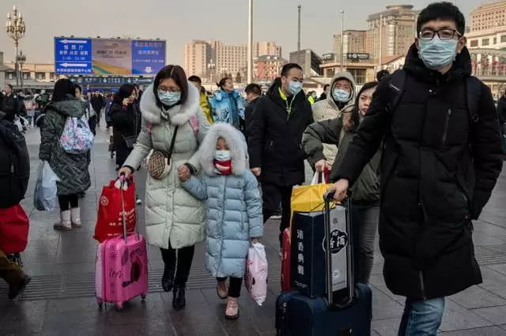
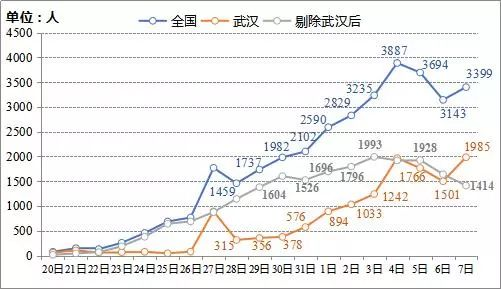
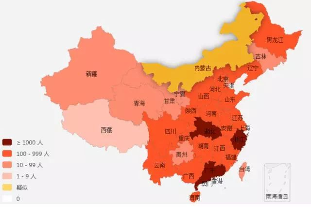

肺炎日记|2月6日：心牵吹哨人李文亮 新冠防控进入新阶段
原文链接 备份链接 【财新网】（记者 丁捷 马丹萌）武汉“封城”多日，全国各省市输入性病例已过潜伏期14天。随着湖北以外各地第一批输入性病例潜伏期即将过去，新冠肺炎防控陆续进入本地散发的“第二阶段”。疫情拐点尚未明确，全国大多数地区严防 …

_
建议疫情较轻的城市管理者要有敢于承担风险的意识，最大化提高科学防控方法和手段，自行决定何时复工和开业，从而降低经济和社会风险，恢复经济的正常平稳运行
_

文 | 李铁
从1月23日武汉封城开始，已经过去半个多月了。新冠肺炎疫情的防控实现了全国总动员，付出了巨大的经济和社会代价。在对重点城市和地区进行加强防范的同时，也出现了一些疫情并不严重的城市，盲目参照疫情严重地区，采取封城和停业等防控措施。
有些城市确诊病例仅仅是个位数，但是防控措施堪比疫情灾区。这种盲目恐慌和攀比的心理，原因是一些干部没有底数，没有使用科学的分析方法，反而过份放大疫情影响，带来对经济的严重损害。
一些经济学家预判，如果继续全国总动员，全部城市和乡村停业停工，中国的GDP将会下降2-3个百分点。因此在防疫战役的关键时期，如何区分疫情的重点地区和非重点地区，采取因地制宜的科学防控措施，及时要求疫情较轻城市和地区复工和开业，对于降低疫情引发的经济和社会成本是十分必要的。
目前，全国除重点城市和疫区之外，疫情都得到了控制，新增确诊病例在武汉之外的地区连续三天出现了下降。
1月20日－2月7日新增确诊病例数量变化情况

如何看待疫情的传播，需要对疫情科学地分析，不仅要在医学层面，而且更要在社会危机治理方面，了解疫情发生及传播的规律，进而制定更为合理的战略方案。
疫情的风险重点在两个方面，一个是即期的医学风险，涉及到传播的范围，确诊的病例，可治愈的人数和如何通过医学手段降低死亡人数和降低传播风险。另一个是为了疫情防控可能承担的经济社会风险，因为这些风险需要全社会来付出，并且可能对未来的经济社会发展造成巨大的困难和压力。
应考虑划分不同疫情级别区域
疫情主要是从人传人开始的，形成大面积传播的主要原因在于中国的人口流动性就业，而且正好与春节期间人口流动的高峰期结合在一起，使得整个疫情的传播被放大到全国，甚至影响到国际。
按照初始的判断，疫情传播的危险点应该是春节前后。
其一是返乡过节度假高峰，也是安排假期旅游和其他聚会活动的高峰。1月10日-1月24日，武汉外流人口中，流入湖北省内城市的占比68.1%；流向湖北省外城市人数占比31.9%。这一波人口流动，把疫情从武汉和湖北带到了全国。
其二是春节后返城，大规模的人口从返乡途中回城就业，又一次形成了人口流动的高峰。如果没有进行疫情控制，这个高峰带来的后果将会极为严重。
春节返城的风险已经大大降低。在整个春节期间，已经对疫区外流人员实行了严防死守，全面的追踪和调查，并且对疫区相关人员基本实现了全隔离。返城就业和度假回家的人，基本来自非疫区。比如，1月25日－2月7日北京、上海的迁入来源地中，来自湖北省的迁入人数占总迁入人数的比例分别是0.6%和0.7%。虽然人口仍会出现大规模的流动，但是风险已经大大降低。
根据各地疫情报告，疑似病例和确诊病例的分布并不平均。截至2月7日24时，湖北省累计确诊病例占全国的约72.1%，新增疑似病例占全国的约49.2%。流入湖北和武汉的就业人口，原先的流出地承担了较大的风险。比如，虽然武汉及相关疫区采取的封城措施较晚，但是已经流出的人口无论是患病还是未患病，都得到了严格的控制，因此全国疫情分布的现状和格局处于相对稳定的状态。
分省看，除湖北、广东、浙江三省外，其他省份确诊病例小于1000人；直辖市和地级市中，确诊病例大于500人的只有湖北省内的10座城市，100－499人的有24座城市，包括北京、上海、广州、深圳，其余城市均少于100人。虽然目前还有死角，但绝大部分应该是在控制范围。全国病例数最多的前100个城市中，有69%的城市增长率下降，其中26%的城市显著下降。
应采取城市疫情分级政策。根据当前情况，其实可以根据疫情发生率、风险程度，划分为疫情等级不同的区域，针对各地的不同情况进行分类指导。如果区域划分明确，对于可能出现的大规模人口流动，也不必过分担心。因为还有各类检测措施和社区治理措施在跟进。有机构已经根据疫情发生的危急程度，对全国的疫情进行了分级。当然这只是按照省的分级，并没有按照城市分级。
截至2月8日19时的分省累计确诊病例分布

图片来源：疫情实时动态
避免采取“一刀切”政策
疫情发生后，将面临两类风险，即期风险和预期风险。现在处于疫情防控形势的转化期，应该未雨绸缪，把一部分关注重点放在预期的经济社会风险中。
从全国各地疫情的应对上看，其实在缺乏防疫统一指导的情况下，各地大多采取了“一刀切”政策，就是停工停业，封闭社区和道路，甚至封城。对于疫情重点地区，这是必须的，但是对于非重点地区，是否也要向重点地区看齐，是在防疫新形势下不得不考虑的的紧迫问题。
我们认为，地方政府领导在科学实施疫情防控的过程中，还是需要加以引导，防止在防控手段上盲目照搬疫情重点地区。我们担心，地方官员的恐慌和不担责心理，在疫情防控的过程中不计后果，将严重放大疫情带来的预期风险，终会给国家的经济发展和社会发展带来巨大的损失。毕竟各种防控措施的全面实施，将影响到无数个不同类型和规模的企业，影响到各个产业和行业的发展，同时影响到人们的正常生活。当下，全国除了集中精力防疫之外，社会的很多方面都陷入了全面停摆之中。
再看一下受疫情影响的其他国家和地区，包括香港和台湾地区的情况。
日本总人口1.27亿人，目前确诊病例86个；泰国总人口约6900万，目前确诊病例25个；德国总人口8300万，目前确诊病例12个；香港和台湾人口分别是745万和2400万，而确诊病例分别是26个和17个。虽然确诊病例相对比较少，也要看到，这些国家和地区并没有采取类似“一刀切”的防控措施。
反观中国的一些地级城市，人口规模达到上百万人，确诊案例数仅仅在个位数，但仍然采取了很多极端措施。从这个意义上来说，是否应该反思应该如何借鉴国际经验？
相比于世界各国，中国在各种抗灾的战时全民动员力方面，具有强大的体制优势。但是如果不计成本的无限放大，全国都向重点疫区看齐，未来可能付出的成本和社会代价也是无限的。
也许向疫区看齐，不会出现疫情传播的风险，看似是没错和没有责任的。但是一系列的问题值得探讨：未来本地的经济和社会发展带来的损失，谁来承担？为什么同样发生疫情的一些国家或地区并没有按照我们的方式采取“一刀切”的全封闭政策？我们应该借鉴哪些方面的经验，如何在科学地采取防范措施之后，尽量减少经济和社会的成本？
其实很多有效的措施和方法都在实施。例如，加强对疫区全方位的支持；强化疫区相关人员的防控，强化社区治理的优越性；对疫情发生风险相对较高的地区和城市，采取必要措施进行风险防范；通过各种媒体和新闻渠道，要求全社会提高个人的自我风险防范意识等。
但是，必须承认在很多方面忽视了另外一些方法和手段。比如，加大科技手段的使用，充分利用手机信令和互联网大数据等，对疫情地区的人口扩散和人口流动的方向进行全方位的追踪。各地采取协同作战的方法，加强信息统筹，实现数据和信息共享。这些本来也是中国独有的优势，如果充分利用，可以大大降低社会成本和经济成本。另外，还可以通过各种医学手段进行多层次的检测，也可以采取更为细致的防护手段和方法，降低传播风险。
通过疫情的防控，可以感受到医学专家们发挥了巨大的作用，在采取全民严防的基础上，更多地通过医学专业知识影响城乡居民加强自我防范意识，进而实现全社会总动员。但是医学专家并不是经济专家和社会专家。他们的重要性在医学方面，而在防范经济社会风险方面，更需要其他学科的专家和政府共同提出方法和解决方案，才有可能防范预期发生的其他经济和社会风险。
所以，在抗击新冠肺炎疫情之战中，我们亟需党中央、国务院及有关部门提出指导全国抗击疫情的意见，要求各地区各城市根据本地实际情况因地制宜地提出自身的方案，采用更为科学、人文的方法来防控疫情，以期降低经济社会成本。例如要求疫情较轻的城市，及时复工、开业，并提供技术支持。
同时，建议各级政府的主官们要有敢于承担风险的意识，最大化的提高科学防控的方法和手段。只有干部的恐惧心理降低了，社会的过度恐慌才有可能被缓解。希望在疫情并不严重并已经达到了充分防控效果的城市，在提高防控能力和手段的同时，自主及时复工、开业，恢复正常经济和社会生活。
可以说，只有真正地站在以人民为中心的立场出发，才有可能从根本上解决这次新冠肺炎抗疫之战的即期风险和预期风险问题，把损失降到最低。
作者为中国城市和小城镇改革发展中心首席经济学家，编辑：朱弢

▲点击图片查看更多疫情报道
责编 | 黄端 duanhuang@caijing.com.cn
本文为《财经》杂志原创文章，未经授权不得转载或建立镜像。如需转载，请在文末留言申请并获取授权。
原文链接 备份链接 【财新网】（记者 丁捷 马丹萌）武汉“封城”多日，全国各省市输入性病例已过潜伏期14天。随着湖北以外各地第一批输入性病例潜伏期即将过去，新冠肺炎防控陆续进入本地散发的“第二阶段”。疫情拐点尚未明确，全国大多数地区严防 …
原文链接 备份链接 02.02.2020本文字数：1995，阅读时长大约3.5分钟 导读：随着送检加快，黄冈今天确诊病例还将继续大增，但医药物资短缺等客观形势下，防控形势十分严峻。 作者 | 第一财经 陈益刊 紧邻武汉的湖北省黄冈市，新 …
原文链接 备份链接 【财新网】（记者 黄蕙昭 综合）新冠肺炎疫情发展呈现新形势：当湖北省新冠肺炎防控战仍处攻坚时期时，其它省市的肺炎防控压力也在增大，如北京等地聚集性病例、本地二代病例增多，疫情面临从输入性向扩散性过渡的潜在挑战。 1 …
原文链接 备份链接 法律学者指出，我国有关政府信息公开的法律规范和工作要求是明晰的，严格遵守就好，“但恰恰在这方面，前一段时间某些地方机关、工作人员的一系列错误做法广受诟病，后续工作中必须坚决纠正”。各地政府的疫情信息公开关键要有需求导 …
原文链接 备份链接 【财新网】（记者 黄蕙昭 综合）武汉市中心医院门前放满花束。7日凌晨3点48分，武汉中心医院官微发布李文亮医生抢救无效过世的消息。当日，手持花束的市民自发前往武汉中心医院，悼念在工作岗位被感染的李文亮医生。他曾因“发 …